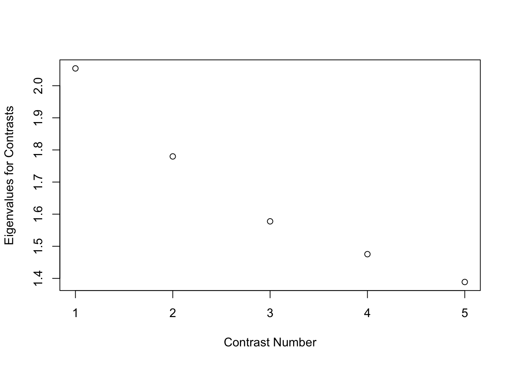
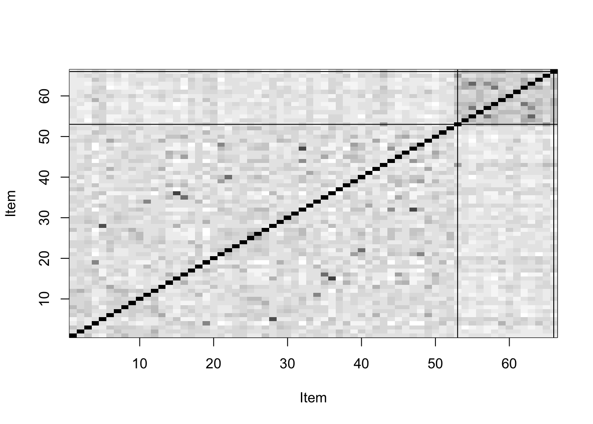
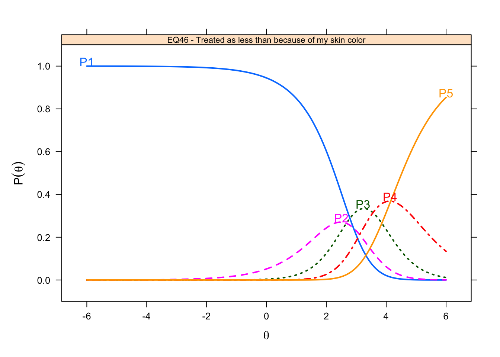
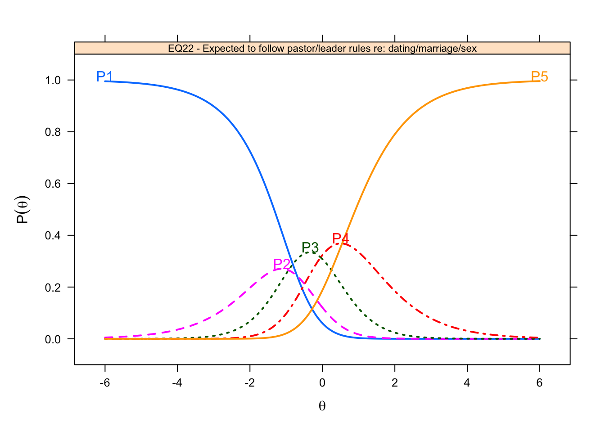
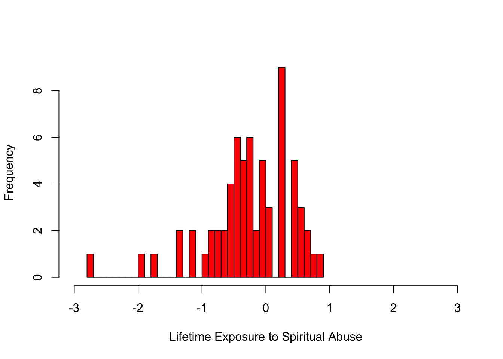
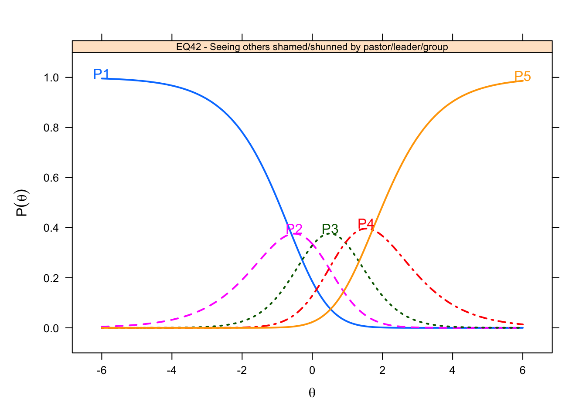
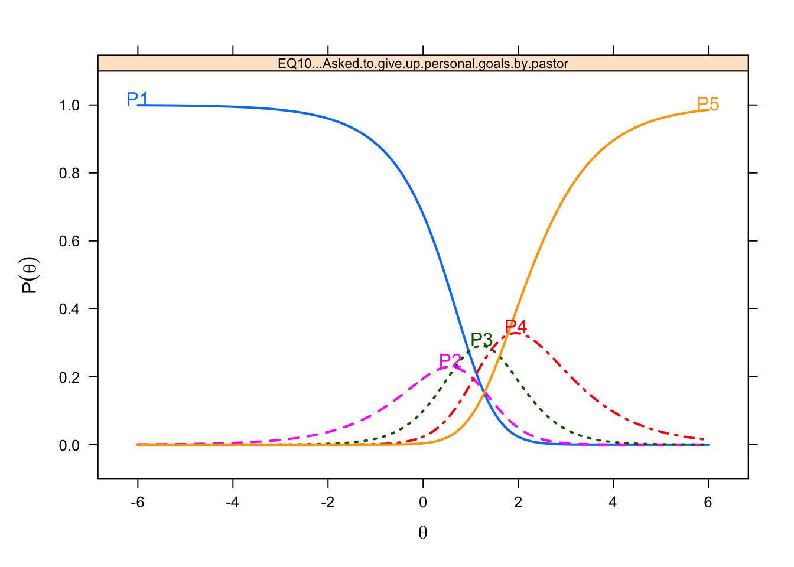
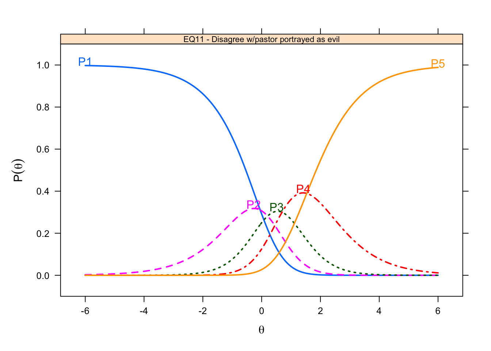

Item Analysis
In this chapter, we examine the technical quality of the items that Dan piloted for the SHAS. Here we address questions like the following:
- Which items, if any, are too “easy”? What is the impact of this?
- Which items, if any, are too “difficult”? What is the impact of this?
- Which items, if any, correlate weakly with others (and therefore might need to be refined or excluded from scaling?
- Which items, if any, have too many response categories which might be profitably collapsed?
We begin by defining item analysis and discussing its importance. Then we document our item analyses from an item response theory (IRT) framework. We conclude by summarizing what we learn from these analyses to help us refine these 66 items and possibly develop better ones in the future.
Item response theory
Item response theory (IRT) is an established framework for empirically evaluating what items measure (Embretson and Reise 2000; Wright and Masters 1982). IRT methods complement methods derived from classical test theory in several ways.
IRT places both examinees and items on the same interval scale. In classical test theory, examinees differ in their scores and items differ in their means or percent of examinees selecting a response; examinees and items are on different scales. By contrast, IRT methods allow measurement of persons and items on the same scale with equal interval properties of the logit scale** and resulting linear measures (Wright & Stone, 1999). In IRT we can estimate item parameters independently of the characteristics of the calibrating sample, and we can estimate person parameters apart from the difficulties of the items taken (Masters, 1982; Rasch, 1966).
Parameters for examinees and items derived from IRT are independent of each other.
IRT gives items diagnostic value. A core assumption of CTT is that items are redundant; they contribute meaningful variation to a total score but they do not occupy a distinct place on the score continuum. IRT is different. IRT does not assume that items are redundant; instead it investigates whether items make distinct contributions to the measurement of the latent trait. Whereas classical test theory measurement is principally concerned with the ratio of noise to signal in the variation contributed by an item, IRT models compute the probability of a certain response to an item given the level of the latent construct the individual possesses (i.e., spiritual abuse) and the relevant item’s difficulty of endorsement. IRT is based on the logistic model and operates on the logit scale.
In what follows, we conduct item analyses through a comparison of several different IRT models: the Rating Scale Model (RSM), the Partial Credit Model (PCM), the Generalized Partial Credit Model (GPCM).
IRT Model Assumptions
IRT makes two assumptions of the data. The first is unidimensionality of the latent trait. Is the trait one dimension? This is important for the SHAS because the questionnaire explicitly distinguished between items measuring external events and internal states. The second assumption is local independence (Embretson and Reise 2000). This means that, once the latent variable has been accounted for, any set of items should not share any meaningful correlation (Edwards, Houts, & Cai, 2018).
Unidimensionality
To verify the assumption of unidimensionality we conducted three analyses. First we confirmed the factor structure using confirmatory factor analysis (CFA). Then we determined the proportion of variance in the observed item responses due to the Rasch model. Finally, we conducted Rasch Principal Component Analysis of Residuals (PCAR) (Smith, 2002).
Factor structure.
Proportion of variance.
Reckase suggests that the unidimensionality assumption is safely met if the Rasch model explains 20% of the variance in the data. According to this analysis, the Rasch model explains 44% of the variance in the SHAS item data. Thus we have some evidence of unidimensionality with which to proceed to further Rasch modeling.
Principal Component Analysis of Residuals (PCAR)

Figure 2: Contrasts from PCA of Standardized Residual Correlations
The second analysis of PCAR examines the correlations among residuals. The premise is that once the Rasch model has been estimated, the correlations among the residuals should be minimal. Linacre () suggests that contrasts with eigenvalues of 2.0 or below can be considered noise. In Figure 2, our PCAR analysis found three contrasts that rose above that 2.0 threshold.
Local Independence
To check the assumption of local independence, we used the Q3 statistic (Yen, 1984). The Q3 statistic index criteria are that the raw residual correlation between pairs of items should never exceed 0.10 (Marais & Andrich, 2008).
WLE Reliability= 0.953 Yen's Q3 Statistic based on an estimated theta score
*** 66 Items | 2145 item pairs
*** Q3 Descriptives
M SD Min 10% 25% 50% 75% 90% Max
-0.015 0.063 -0.148 -0.076 -0.052 -0.023 0.010 0.047 0.649 
Figure 3: Correlations matrix of Item Residuals
Figure 3 is a plot of the matrix of correlations between item residuals. Each square depicts a correlation. The squares are shaded in grey with the lightest shade indicating the weakest correlations. As hoped, the vast majority of squares are very light, indicating weak correlations among the item residuals.
Summary
These analyses offer mixed evidence of assumption satisfaction. The model explains 44% of the variance of the item responses. But we see three contrasts of the standardized residuals above the threshold of 2. In the Q3 plot we see a few strong correlations of item correlations.
Rating Scale Model (RSM)
The first IRT model is the Rating Scale Model (RSM) (Andrich 1978). The model is an extension of the Rasch model (designed for dichotomous items) for use with polytomous items based on rating scales such as Likert scales of agreement (Embretson and Reise 2000) and estimates the probability of choosing from among several response options given an examinee’s location on the latent trait (level of lifetime exposure to spiritual abuse). More specifically, the increase in difficulty involved in choosing from between two response categories is called a “step parameter”. The RSM assumes that all items use the same rating scale. As a Rasch model, it assumes that all items discriminate equally well and thus fixes the discrimination parameter to 1. The model also fixes the step parameters of all the items on the premise that the response categories are the same for all items. What the RSM frees to vary are the item difficulty parameters. Thus the focus of the RSM is the differences in item difficulties. If all of these assumptions are true – that the items and their rating scales differentiate examinees equally well and differ only in overall difficulty – then the observed pattern of item responses will closely match the pattern of items responses expected by the RSM and the model will fit.
| a1 | b1 | b2 | b3 | b4 | c | |
|---|---|---|---|---|---|---|
| EQ46 - Treated as less than because of my skin color | 1 | 0.13 | -0.11 | 0.78 | 1.37 | -2.78 |
| EQ41 - Denied opportunities to serve because of my sexual orientation | 1 | 0.13 | -0.11 | 0.78 | 1.37 | -1.90 |
| EQ17 - Treated as less than b/c my sexual orientation | 1 | 0.13 | -0.11 | 0.78 | 1.37 | -1.73 |
| EQ47 - Medical care being postponed/withheld for religious reasons | 1 | 0.13 | -0.11 | 0.78 | 1.37 | -1.40 |
| EQ60 - Encouraged by leader to stay in abusive marriage | 1 | 0.13 | -0.11 | 0.78 | 1.37 | -1.37 |
| EQ55 - Hearing cultural references in sermons unfamiliar to my race/eth. subculture | 1 | 0.13 | -0.11 | 0.78 | 1.37 | -1.19 |
| IQ72 - Feeling as if God harmed me directly | 1 | 0.13 | -0.11 | 0.78 | 1.37 | -1.11 |
| IQ81 - Nightmares about my negative religious experiences | 1 | 0.13 | -0.11 | 0.78 | 1.37 | -0.91 |
| EQ10 - Asked to give up personal goals by pastor | 1 | 0.13 | -0.11 | 0.78 | 1.37 | -0.82 |
| EQ65 - Cut off/shunned by more religious family members | 1 | 0.13 | -0.11 | 0.78 | 1.37 | -0.81 |
| EQ26 - Pressured to forgive abuser while abuse was ongoing | 1 | 0.13 | -0.11 | 0.78 | 1.37 | -0.76 |
| EQ24 - Expected to consult pastor/leader before making non-religious decisions | 1 | 0.13 | -0.11 | 0.78 | 1.37 | -0.74 |
| EQ23 - Prayer replacing needed medical interventions | 1 | 0.13 | -0.11 | 0.78 | 1.37 | -0.69 |
| EQ27 - Denied opportunities to serve b/c of my gender | 1 | 0.13 | -0.11 | 0.78 | 1.37 | -0.67 |
| EQ31 - Shunned/ignored by pastor/church/group | 1 | 0.13 | -0.11 | 0.78 | 1.37 | -0.56 |
| EQ30 - Deterred from seeking mental health treatment/counseling/medication | 1 | 0.13 | -0.11 | 0.78 | 1.37 | -0.54 |
| EQ43 - Shamed by pastor/group for poor spiritual/moral performance | 1 | 0.13 | -0.11 | 0.78 | 1.37 | -0.53 |
| IQ68 - Anxiety attacks triggered by religious stimuli | 1 | 0.13 | -0.11 | 0.78 | 1.37 | -0.53 |
| EQ52 - Blamed for harm I suffered rather than blaming who harmed me | 1 | 0.13 | -0.11 | 0.78 | 1.37 | -0.49 |
| IQ70 - Feeling betrayed by God | 1 | 0.13 | -0.11 | 0.78 | 1.37 | -0.47 |
| EQ49 - Leadership/group protecting and elevating abusive individuals | 1 | 0.13 | -0.11 | 0.78 | 1.37 | -0.44 |
| EQ16 - Church/community abandoning me in difficult time | 1 | 0.13 | -0.11 | 0.78 | 1.37 | -0.43 |
| EQ20 - Members pressured to give money despite financial hardship | 1 | 0.13 | -0.11 | 0.78 | 1.37 | -0.41 |
| EQ57 - Developing mental/physical ailments from conforming to group/leader’s expectation | 1 | 0.13 | -0.11 | 0.78 | 1.37 | -0.40 |
| EQ62 - Scripture used to justify physical violence | 1 | 0.13 | -0.11 | 0.78 | 1.37 | -0.40 |
| EQ59 - Pastor/group blame victim for their abuse | 1 | 0.13 | -0.11 | 0.78 | 1.37 | -0.39 |
| EQ21 - Taught I would risk Hell if left my church/group | 1 | 0.13 | -0.11 | 0.78 | 1.37 | -0.36 |
| IQ82 - Having trouble navigating life outside my church/community | 1 | 0.13 | -0.11 | 0.78 | 1.37 | -0.32 |
| EQ50 - Treated as less than because of my gender | 1 | 0.13 | -0.11 | 0.78 | 1.37 | -0.32 |
| EQ64 - Witnessing women pressured to stay in unfaithful/abusive marriages | 1 | 0.13 | -0.11 | 0.78 | 1.37 | -0.30 |
| EQ28 - Leadershi/group protecting abusive individuals | 1 | 0.13 | -0.11 | 0.78 | 1.37 | -0.29 |
| EQ40 - Threatening Divine punishment to keep group members in line | 1 | 0.13 | -0.11 | 0.78 | 1.37 | -0.27 |
| EQ63 - Shamed by pastor/group for raising questions or concerns | 1 | 0.13 | -0.11 | 0.78 | 1.37 | -0.24 |
| EQ19 - Behavior excessively monitored by pastor/group | 1 | 0.13 | -0.11 | 0.78 | 1.37 | -0.22 |
| EQ51 - Extreme pressure to be pastor/missionary/spiritual leader | 1 | 0.13 | -0.11 | 0.78 | 1.37 | -0.21 |
| EQ53 - Scripture used to justify abusive parent-child behavior | 1 | 0.13 | -0.11 | 0.78 | 1.37 | -0.18 |
| IQ79 - Distrust of God | 1 | 0.13 | -0.11 | 0.78 | 1.37 | -0.16 |
| EQ34 - Scripture used to justify physical punishment/severe discipline | 1 | 0.13 | -0.11 | 0.78 | 1.37 | -0.07 |
| EQ29 - Feeling special when in pastor’s good graces; otherwise ignored | 1 | 0.13 | -0.11 | 0.78 | 1.37 | -0.06 |
| IQ73 - Self-hatred or self-loathing | 1 | 0.13 | -0.11 | 0.78 | 1.37 | -0.04 |
| EQ11 - Disagree w/pastor portrayed as evil | 1 | 0.13 | -0.11 | 0.78 | 1.37 | -0.01 |
| EQ7 - Pastor speaking on God’s behalf | 1 | 0.13 | -0.11 | 0.78 | 1.37 | 0.00 |
| EQ58 - Terror/horror used to motivate religious decisions | 1 | 0.13 | -0.11 | 0.78 | 1.37 | 0.02 |
| EQ42 - Seeing others shamed/shunned by pastor/leader/group | 1 | 0.13 | -0.11 | 0.78 | 1.37 | 0.06 |
| EQ44 - Love/acceptance offered only for high spiritual/moral performance | 1 | 0.13 | -0.11 | 0.78 | 1.37 | 0.09 |
| EQ56 - Being made to feel I was crazy/weird for doubts/questions | 1 | 0.13 | -0.11 | 0.78 | 1.37 | 0.21 |
| EQ18 - Church/pastor discourage critical thinking | 1 | 0.13 | -0.11 | 0.78 | 1.37 | 0.22 |
| IQ78 - A lack of self-worth | 1 | 0.13 | -0.11 | 0.78 | 1.37 | 0.24 |
| EQ45 - Developmentally-inappropriate/anxious Hell/Satan/demons taught to young children | 1 | 0.13 | -0.11 | 0.78 | 1.37 | 0.24 |
| IQ74 - Sadness over the loss of my faith/religious community | 1 | 0.13 | -0.11 | 0.78 | 1.37 | 0.26 |
| EQ36 - Mental/physical problems interpreted as spiritual/moral weakness | 1 | 0.13 | -0.11 | 0.78 | 1.37 | 0.26 |
| EQ61 - Developmentally-inappropriate/anxious end times descriptions taught to young children | 1 | 0.13 | -0.11 | 0.78 | 1.37 | 0.26 |
| EQ32 - Feeling unable to express unhappiness | 1 | 0.13 | -0.11 | 0.78 | 1.37 | 0.28 |
| IQ76 - Feeling I wasted years of my life in a church/set of beliefs | 1 | 0.13 | -0.11 | 0.78 | 1.37 | 0.29 |
| EQ54 - Being explicitly taught to distrust my intuitions | 1 | 0.13 | -0.11 | 0.78 | 1.37 | 0.40 |
| EQ37 - Made to feel less spiritually mature than pastor/leadership | 1 | 0.13 | -0.11 | 0.78 | 1.37 | 0.42 |
| EQ38 - Unrealistic demands placed on my moral/religious behavior | 1 | 0.13 | -0.11 | 0.78 | 1.37 | 0.43 |
| IQ71 - Avoiding religious activities/settings to reduce distressing feelings | 1 | 0.13 | -0.11 | 0.78 | 1.37 | 0.47 |
| IQ69 - Lack of spiritual direction/purpose | 1 | 0.13 | -0.11 | 0.78 | 1.37 | 0.48 |
| IQ80 - Feeling isolated | 1 | 0.13 | -0.11 | 0.78 | 1.37 | 0.54 |
| EQ39 - Made to feel shame over natural sexual desires (not actions) | 1 | 0.13 | -0.11 | 0.78 | 1.37 | 0.55 |
| IQ77 - Anger upon reflecting on negative religious experiences | 1 | 0.13 | -0.11 | 0.78 | 1.37 | 0.55 |
| EQ35 - Taught to distrust my emotions | 1 | 0.13 | -0.11 | 0.78 | 1.37 | 0.62 |
| EQ25 - Feeling unable to raise questions and issues | 1 | 0.13 | -0.11 | 0.78 | 1.37 | 0.69 |
| EQ66 - Others treated as less than due to their sexual orientation | 1 | 0.13 | -0.11 | 0.78 | 1.37 | 0.77 |
| EQ22 - Expected to follow pastor/leader rules re: dating/marriage/sex | 1 | 0.13 | -0.11 | 0.78 | 1.37 | 0.83 |
Item parameters. Table 2 reports the item parameters estimated by the RSM for all 66 SHAS items. The first column shows the discrimination parameter, fixed to “1” for all items on the premise that the items discriminate equally well. The subsequent columns (b1 to b4) report the estimated thresholds (or step parameters). These values, too, are the same for all items.
Item plots offer a way to see this information visually. Following are plots of two items. In both plots, the horizontal (x) axis is the scale of the latent trait (overall lifetime exposure to spiritual abuse) expressed in logits ranging from -6 to +6. The vertical (y) axis is the probability of selecting a given response (such as “Always”) at each level of latent trait. The blue line is the probability of selecting “Never” for examinees ranging from low to high lifetime spiritual abuse.


What does vary between items in this model is the difficulty parameter (also called the item location), shown in the “c” column of Table 2. This parameter represents the location of the item on the logit scale of the latent trait: Does the item represent the “most” spiritual abuse? The least? Or somewhere in the middle? In Table 2, items are sorted by location from least abuse to most abuse.

Figure 4: Distribution of Item Difficulty
Figure 4 is a histogram of the distribution of item difficulty parameters. The distribution is negatively skewed with most items clustered slightly above the average level of spiritual abuse and several items measuring very low levels of lifetime exposure to spiritual abuse.
Item fit statistics. Fit statistics show how closely the observed pattern of item responses fits the pattern of item responses predicted by the particular IRT model (Rasch, partial credit, etc.). They do this by means of chi-square statistics which examine the cumulative difference the observed pattern of item responses and the pattern of item responses that the model would expect. Two fit statistics commonly used in IRT models are the infit mean square (MNSQ) and the outfit mean square (MNSQ) (Bond and Fox 2015). The infit statistic places greater emphasis on unexpected responses that are close to the examinees and item location. The outfit is sensitive to unexpected responses that are far from the location. The expected value of infit or outfit for each item is 1.0, with a range of acceptable values ranging from 0.5 to 1.5. Values outside these boundaries indicate a lack of fit between items and the model.
| item | outfit | z.outfit | infit | z.infit |
|---|---|---|---|---|
| EQ17 - Treated as less than b/c my sexual orientation | 1.89 | 10.09 | 2.26 | 22.15 |
| EQ27 - Denied opportunities to serve b/c of my gender | 2.02 | 18.55 | 1.77 | 22.71 |
| EQ41 - Denied opportunities to serve because of my sexual orientation | 2.63 | 14.93 | 2.26 | 20.18 |
| EQ46 - Treated as less than because of my skin color | 2.37 | 8.95 | 1.89 | 9.79 |
| EQ50 - Treated as less than because of my gender | 1.68 | 15.51 | 1.73 | 23.36 |
| EQ55 - Hearing cultural references in sermons unfamiliar to my race/eth. subculture | 2.68 | 21.37 | 1.62 | 15.75 |
All but six of the 66 items had infit and outfit statistics within the acceptable range from 0.5 to 1.5. Statistics for these six misfitting items are presented here in Table 3. The large outfit values mean the observed patterns of responses to these items differed substantially from the patterns of responses expected by the PCM. These items capture the experiences of women, people of color, and LGBTQ persons.
Model fit. To assess the overall fit of the model to the item response data we use two statistics. The first is the Root Mean Square Error of Approximation (RMSEA). The suggested cutoff for RMSEA is .06. The second is the CFI. The suggested cutoff for the CFI is .95.
| M2 | df | p | RMSEA | RMSEA_5 | RMSEA_95 | TLI | CFI | |
|---|---|---|---|---|---|---|---|---|
| stats | 61561.13 | 2339 | 0 | 0.09 | 0.09 | 0.09 | 0.96 | 0.95 |
Table 4 reports the model fit statistics for the SHAS items. The obtained RMSEA value = .092 (95% CI[.092, .093]) exceeds the cutoff of .06. The CFI = .953 meets the recommended .95 threshold. Together these statistics offer weak evidence that the RSM fits the SHAS items.
Summary.
Partial Credit Model (PCM)
The second model we consider is the Partial Credit Model (PCM) (Masters 1982). This is a polytomous item response model belonging to the Rasch family. This means that it extends the Rasch model, which is based on dichotomous item responses (1=correct, 0=incorrect), by considering the probability of choosing from among several response options such as those typically presented in Likert scales of agreement. The number of response categories in each item may vary (Embretson and Reise 2000). It follows that the PCM contains m (m + 1 being the number of response categories) threshold parameters, and each threshold parameter marks a category intersection (Masters 1982). Threshold sometimes refers to “step difficulty” or “step parameter” and illustrates the point on the latent trait continuum (e.g., spiritual abuse) where a response in category k becomes more likely than a response in category k – 1 (de Ayala, 2009). The PCM provides scores for items, persons, and step parameters on a logit scale. We begin by loading the mirt library and estimating the model on the data from the 66 SHAS items. This model constrains the slopes to 1 and freely estimates the variance parameters.
| a | b1 | b2 | b3 | b4 | deltab1b2 | deltab2b3 | deltab3b4 | avg | |
|---|---|---|---|---|---|---|---|---|---|
| EQ41 - Denied opportunities to serve because of my sexual orientation | 1 | 3.87 | 0.61 | 1.45 | 1.09 | -3.26 | 0.85 | -0.37 | -0.93 |
| EQ17 - Treated as less than b/c my sexual orientation | 1 | 3.94 | 0.32 | 1.18 | 1.20 | -3.62 | 0.86 | 0.02 | -0.91 |
| EQ46 - Treated as less than because of my skin color | 1 | 3.89 | 1.22 | 2.69 | 2.41 | -2.67 | 1.47 | -0.27 | -0.49 |
| EQ27 - Denied opportunities to serve b/c of my gender | 1 | 1.62 | 0.37 | 1.08 | 1.17 | -1.26 | 0.71 | 0.10 | -0.15 |
| EQ50 - Treated as less than because of my gender | 1 | 1.57 | -0.26 | 0.76 | 1.15 | -1.83 | 1.02 | 0.38 | -0.14 |
| EQ21 - Taught I would risk Hell if left my church/group | 1 | 1.08 | 0.39 | 0.94 | 0.74 | -0.68 | 0.54 | -0.19 | -0.11 |
| EQ60 - Encouraged by leader to stay in abusive marriage | 1 | 2.21 | 0.92 | 1.46 | 2.15 | -1.28 | 0.53 | 0.70 | -0.02 |
| EQ26 - Pressured to forgive abuser while abuse was ongoing | 1 | 1.40 | 0.74 | 1.01 | 1.51 | -0.65 | 0.27 | 0.50 | 0.04 |
| EQ20 - Members pressured to give money despite financial hardship | 1 | 0.96 | 0.34 | 0.99 | 1.23 | -0.62 | 0.65 | 0.24 | 0.09 |
| EQ10 - Asked to give up personal goals by pastor | 1 | 1.25 | 0.67 | 1.44 | 1.77 | -0.58 | 0.77 | 0.33 | 0.18 |
| EQ40 - Threatening Divine punishment to keep group members in line | 1 | 0.64 | 0.20 | 1.08 | 1.17 | -0.43 | 0.88 | 0.09 | 0.18 |
| EQ65 - Cut off/shunned by more religious family members | 1 | 1.19 | 0.79 | 1.32 | 1.81 | -0.40 | 0.53 | 0.49 | 0.21 |
| EQ57 - Developing mental/physical ailments from conforming to group/leader’s expectation | 1 | 0.81 | 0.30 | 1.05 | 1.51 | -0.51 | 0.74 | 0.46 | 0.23 |
| EQ47 - Medical care being postponed/withheld for religious reasons | 1 | 1.55 | 1.25 | 2.51 | 2.25 | -0.31 | 1.26 | -0.26 | 0.23 |
| EQ22 - Expected to follow pastor/leader rules re: dating/marriage/sex | 1 | -0.41 | -0.59 | -0.29 | 0.33 | -0.18 | 0.30 | 0.62 | 0.25 |
| IQ76 - Feeling I wasted years of my life in a church/set of beliefs | 1 | -0.04 | -0.21 | 0.53 | 0.72 | -0.17 | 0.74 | 0.19 | 0.25 |
| IQ72 - Feeling as if God harmed me directly | 1 | 1.35 | 0.88 | 2.15 | 2.11 | -0.46 | 1.26 | -0.03 | 0.25 |
| EQ39 - Made to feel shame over natural sexual desires (not actions) | 1 | -0.19 | -0.61 | 0.25 | 0.63 | -0.42 | 0.86 | 0.38 | 0.27 |
| EQ24 - Expected to consult pastor/leader before making non-religious decisions | 1 | 1.10 | 0.47 | 1.55 | 1.98 | -0.63 | 1.07 | 0.44 | 0.29 |
| EQ7 - Pastor speaking on God’s behalf | 1 | 0.20 | 0.11 | 0.73 | 1.09 | -0.10 | 0.62 | 0.36 | 0.30 |
| EQ61 - Developmentally-inappropriate/anxious end times descriptions taught to young children | 1 | -0.02 | -0.20 | 0.45 | 0.91 | -0.18 | 0.65 | 0.46 | 0.31 |
| EQ51 - Extreme pressure to be pastor/missionary/spiritual leader | 1 | 0.41 | 0.35 | 0.82 | 1.37 | -0.06 | 0.47 | 0.55 | 0.32 |
| EQ30 - Deterred from seeking mental health treatment/counseling/medication | 1 | 0.85 | 0.40 | 1.21 | 1.89 | -0.46 | 0.82 | 0.68 | 0.35 |
| EQ53 - Scripture used to justify abusive parent-child behavior | 1 | 0.33 | 0.18 | 0.98 | 1.39 | -0.15 | 0.80 | 0.41 | 0.35 |
| EQ55 - Hearing cultural references in sermons unfamiliar to my race/eth. subculture | 1 | 1.32 | 1.20 | 1.94 | 2.41 | -0.12 | 0.74 | 0.47 | 0.36 |
| IQ68 - Anxiety attacks triggered by religious stimuli | 1 | 0.83 | 0.29 | 1.32 | 1.98 | -0.54 | 1.02 | 0.67 | 0.38 |
| EQ52 - Blamed for harm I suffered rather than blaming who harmed me | 1 | 0.69 | 0.55 | 1.04 | 1.93 | -0.14 | 0.49 | 0.89 | 0.41 |
| EQ19 - Behavior excessively monitored by pastor/group | 1 | 0.41 | 0.19 | 0.90 | 1.67 | -0.22 | 0.71 | 0.76 | 0.42 |
| EQ66 - Others treated as less than due to their sexual orientation | 1 | -0.62 | -0.86 | -0.01 | 0.66 | -0.24 | 0.85 | 0.68 | 0.43 |
| IQ81 - Nightmares about my negative religious experiences | 1 | 0.91 | 0.86 | 2.00 | 2.23 | -0.05 | 1.14 | 0.23 | 0.44 |
| EQ54 - Being explicitly taught to distrust my intuitions | 1 | -0.39 | -0.49 | 0.53 | 0.93 | -0.10 | 1.02 | 0.40 | 0.44 |
| EQ62 - Scripture used to justify physical violence | 1 | 0.52 | 0.20 | 1.37 | 1.89 | -0.32 | 1.17 | 0.52 | 0.46 |
| EQ23 - Prayer replacing needed medical interventions | 1 | 0.74 | 0.65 | 1.60 | 2.15 | -0.08 | 0.94 | 0.55 | 0.47 |
| EQ58 - Terror/horror used to motivate religious decisions | 1 | 0.01 | -0.15 | 0.94 | 1.43 | -0.16 | 1.08 | 0.49 | 0.47 |
| EQ38 - Unrealistic demands placed on my moral/religious behavior | 1 | -0.49 | -0.49 | 0.49 | 0.94 | 0.00 | 0.99 | 0.44 | 0.47 |
| EQ29 - Feeling special when in pastor’s good graces; otherwise ignored | 1 | 0.09 | 0.03 | 0.88 | 1.52 | -0.06 | 0.85 | 0.65 | 0.48 |
| EQ34 - Scripture used to justify physical punishment/severe discipline | 1 | 0.07 | 0.04 | 0.93 | 1.52 | -0.03 | 0.89 | 0.59 | 0.48 |
| EQ35 - Taught to distrust my emotions | 1 | -0.65 | -0.71 | 0.28 | 0.80 | -0.06 | 0.99 | 0.52 | 0.48 |
| EQ18 - Church/pastor discourage critical thinking | 1 | -0.19 | -0.38 | 0.68 | 1.29 | -0.19 | 1.06 | 0.60 | 0.49 |
| EQ44 - Love/acceptance offered only for high spiritual/moral performance | 1 | -0.03 | -0.18 | 0.67 | 1.53 | -0.15 | 0.85 | 0.86 | 0.52 |
| EQ56 - Being made to feel I was crazy/weird for doubts/questions | 1 | -0.22 | -0.26 | 0.53 | 1.45 | -0.04 | 0.80 | 0.91 | 0.56 |
| EQ32 - Feeling unable to express unhappiness | 1 | -0.35 | -0.53 | 0.65 | 1.52 | -0.18 | 1.18 | 0.87 | 0.62 |
Item parameters. Table 5 reports the item parameters estimated by the PCM. Once again, column (a) reports the discrimination parameter fixed as “1” for all items on the premise that the items discriminate examinees equally well. The subsequent columns (b1 to b4) report the estimated thresholds (or step parameters) for each item. Because the SHAS items all have five response categories, the PCM estimates four threshold parameters (b1 to b4) for each item. These represent the change in lifetime exposure to spiritual abuse represented by choosing between two response categories, such as, for example, “Once or twice” over “Never.” Unlike the Rating Scale Model (RSM) which estimated the same thresholds for all items and allowed the items to vary only by overall difficulty, the PCM allows the thresholds to vary (Embretson and Reise 2000). The important analytic question, therefore, is which items have ordered thresholds and which have “reversals.” A reversal between two category thresholds suggests that one might not be contributing reliable information and might be collapsed. Most of the SHAS items (43 out of 66) had reversals, and these items with reversals are shown in Table 5. On each of these items, examinees who had experienced more overall lifetime spiritual abuse were more likely to report “Never” than “Once or twice”.
Again, plots of the option characteristic curves help convey this information visually. The following plots illustrate three items with very different sets of curves. The first item illustrates the intended pattern of ordered thresholds. The second and third items show pronounced reversals.

Figure 5: Option Characteristic Curve for Item 42 - Seeing others shamed/shunned by pastor/leader/group
Figure 5 shows the intended pattern of responses. Examinees who had experienced less lifetime exposure to spiritual abuse were most likely to select P1: “Never.” Those who had experienced a little more were more likely to select P2: “Once or twice.” And so on. On this item the response categories functioned as intended to sort examinees on the basis of lifetime exposure to spiritual abuse.

Figure ?? shows an item with reversals. the intended pattern of responses. Examinees who had experienced less lifetime exposure to spiritual abuse were most likely to select P1: “Never.” Those who had experienced a little more were more likely to select P2: “Once or twice.” And so on. On this item the response categories functioned as intended to sort examinees on the basis of lifetime exposure to spiritual abuse.
Fit statistics. Fit statistics gauge the extent to which the observed pattern of item responses fit the IRT model (Rasch, partial credit, etc.). They do this by means of chi-square statistics which examine the cumulative difference the observed pattern of item responses and the pattern of item respones that the model would expect. Two fit statistics commonly used in IRT modesl are the infit mean square (MNSQ) and the outfit mean square (MNSQ) (Bond and Fox 2015). The infit statistic places greater emphasis on unexpected responses that are close to the examinees and item location. The outfit is sensitive to unexpected responses that are far from the location. The expected value of infit or outfit for each item is 1.0, with a range of acceptable values ranging from 0.5 to 1.5. Values outside these boundaries indicate a lack of fit between items and the model.
| item | outfit | z.outfit | infit | z.infit |
|---|---|---|---|---|
| EQ17 - Treated as less than b/c my sexual orientation | 2.79 | 6.96 | 1.55 | 9.54 |
| EQ27 - Denied opportunities to serve b/c of my gender | 2.68 | 17.94 | 1.50 | 15.02 |
| EQ41 - Denied opportunities to serve because of my sexual orientation | 6.62 | 14.95 | 1.52 | 8.04 |
| EQ46 - Treated as less than because of my skin color | 3.25 | 8.33 | 1.42 | 4.34 |
| EQ50 - Treated as less than because of my gender | 1.95 | 12.41 | 1.51 | 16.63 |
| EQ55 - Hearing cultural references in sermons unfamiliar to my race/eth. subculture | 2.82 | 22.06 | 1.58 | 14.70 |
This information suggests a decent fit of the PCM to the SHAS item response data. All but six of the 66 items had infit and outfit statistics within the acceptable range from 0.5 to 1.5. Statistics for these six misfitting items are presented here in Table 6. The large outfit values mean the observed patterns of responses to these items differed substantially from the patterns of responses expected by the PCM. These items capture the experiences of women, people of color, and LGBTQ persons.
Model fit.
M2 df p RMSEA RMSEA_5 RMSEA_95 SRMSR TLI
stats 51392.82 2144 0 0.08782602 0.08715423 0.08847002 0.1170549 0.96122
CFI
stats 0.9612381The obtained RMSEA value = .088 (95% CI[.088, .089]) and SRMSR value = .118 suggest that data do not fit the model reasonably very well using suggested cutoff values of RMSEA <= .06 and SRMSR <= .08 as suggested guidelines for assessing fit. The CFI = .961 exceeded the recommended .95 threshold.